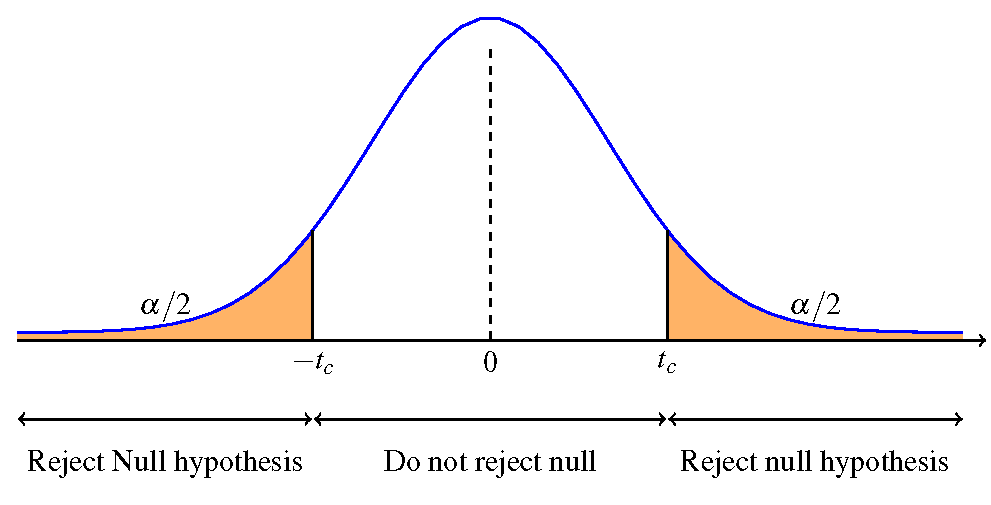
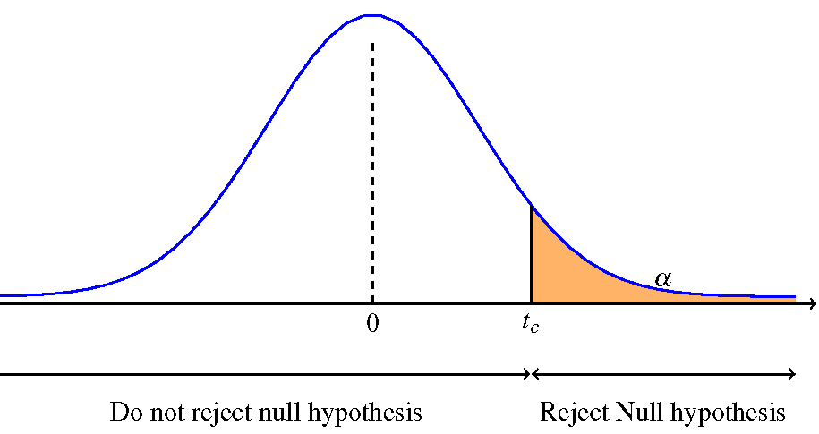
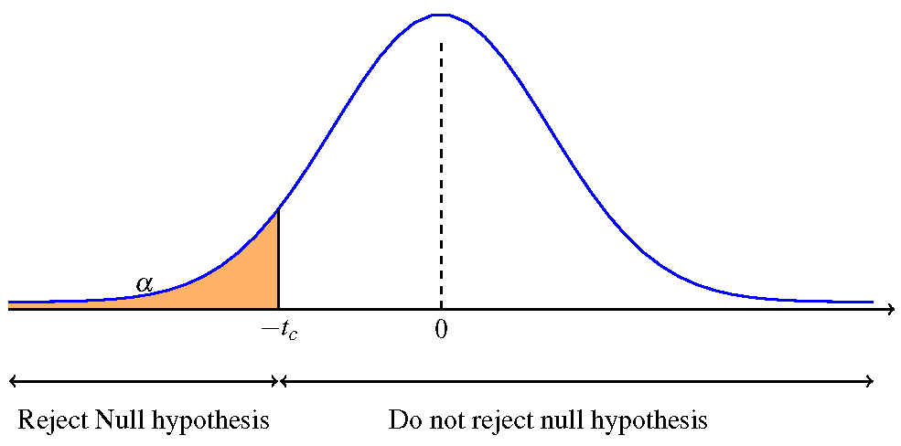

When we don't know the population standard deviation or the sample size is small, we need to use the $t$-distribution
General process
Two-sided test -- the alternative hypothesis is "not equal to".
One-sided test -- the alternative hypothesis is "greater than".
One-sided test -- the alternative hypothesis is "less than".
Make a conclusion for each hypothesis test.
The mean work week for engineers in a company is believed to be about 60 hours. A newly hired engineer hopes that it's shorter. The work week of 10 engineers from the company are \[45 \quad 50 \quad 55 \quad 55 \quad 55 \quad 55 \quad 60 \quad 60 \quad 65\quad 70 \] Based on the data should the new engineer count on the mean work week to be shorter than 60 hours?
Use a level of significance $\alpha = 0.1$
Null hypothesis: $H_0: \mu = 60$ hours
Alternative hypothesis: $H_1: \mu < 60$ hours
Compute the sample mean: $\overline{x} = 57$ hours
Compute the sample standard deviation: $s = 7.1492$ hours
Compute the $t$-value: \[t = (57 - 60) / \left(\frac{7.1492}{\sqrt{10}}\right) = -1.3269 \]
Compute the degrees of freedom: $df = 9$.
Note this is a one-sided (left) hypothesis test, since $H_1: \mu < 60$ hours
Identify the critical value: $t_c = 1.383$
Compare $t$ and $-t_c$ (for a left-sided test) \[-1.3269 > -1.383 \]
Because the $t$ value is more than the critical value (more than $-t_c$) we do not reject the null hypothesis.
The data does not support the claim that the average work week at this company is less than 60 hours.
It is believed that a stock price for a particular company will grow at a rate of $\$5$ per week. An investor does not believe this claim.
The changes in stock price is recorded for ten weeks and are as follows \[2 \quad 3 \quad 3 \quad 4 \quad 5 \quad 5 \quad 6 \quad 7\quad 8 \quad 10 \]
It is believed that the growth rate of the stock is normally distributed.
Perform a hypothesis test using a $5\%$ level of significance.
Null hypothesis: $H_0: \mu = 5$ dollars
Alternative hypothesis: $H_1: \mu \neq 5$ dollars
Compute the sample mean $\overline{x} = 5.3$
Compute the sample standard deviation $s = 2.4967$
Compute the $t$-value \[ t = (5.3 - 5)/ \left(\frac{2.4967}{\sqrt{10}}\right) = 0.380\]
Compute the degrees of freedom: $df = 9$.
Note this is a two-sided hypothesis test, since $H_1: \mu \neq 5$ dollars
Identify the critical value: $t_c = 2.262$
Compare $t$ and $t_c$; for a two-sided test compare $t$ with $t_c$ and $-t_c$ \[-2.262 < 0.380 < 2.262 \]
Because the $t$ value is between $\pm t_c$ we do not reject the null hypothesis.
The data does support the claim that the average weekly growth rate of the stock is $\$5$.
Textbook section 9.5: Additional Information and Full Hypotheses Test Examples
Textbook section 9.6: Hypothesis Testing of a Single Mean and Single Proportion